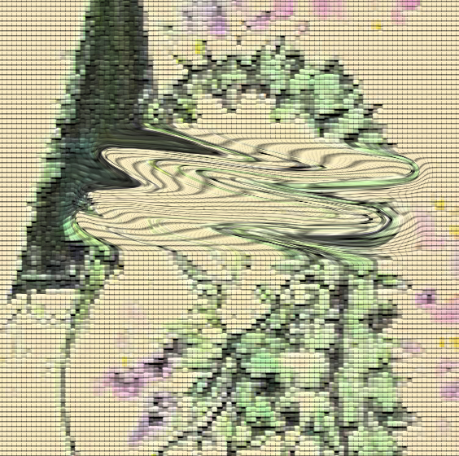
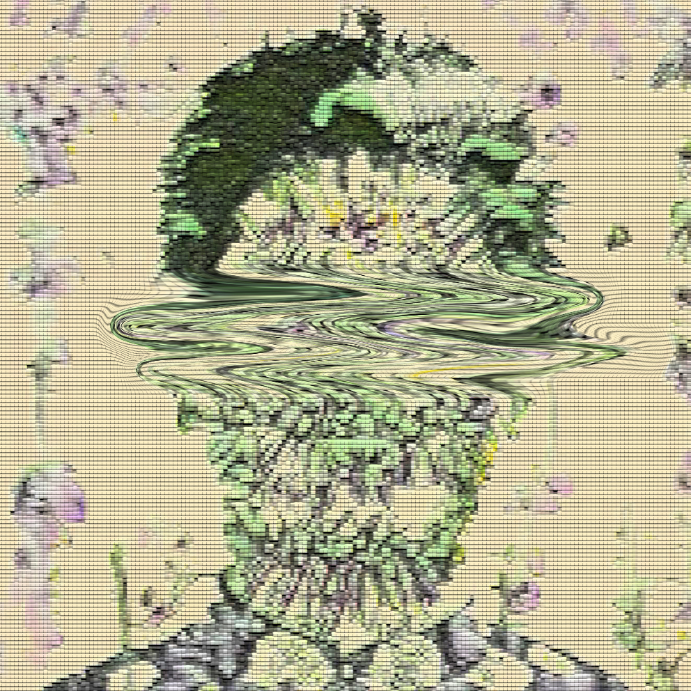
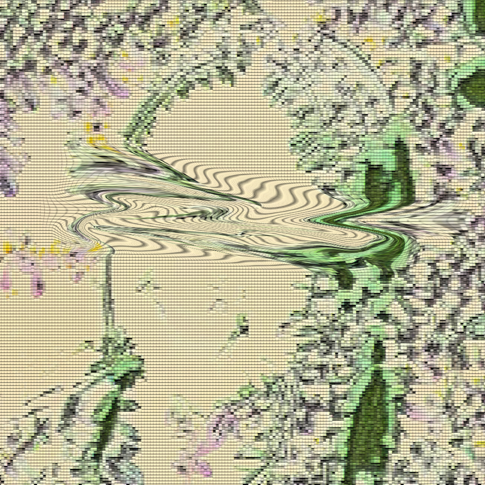
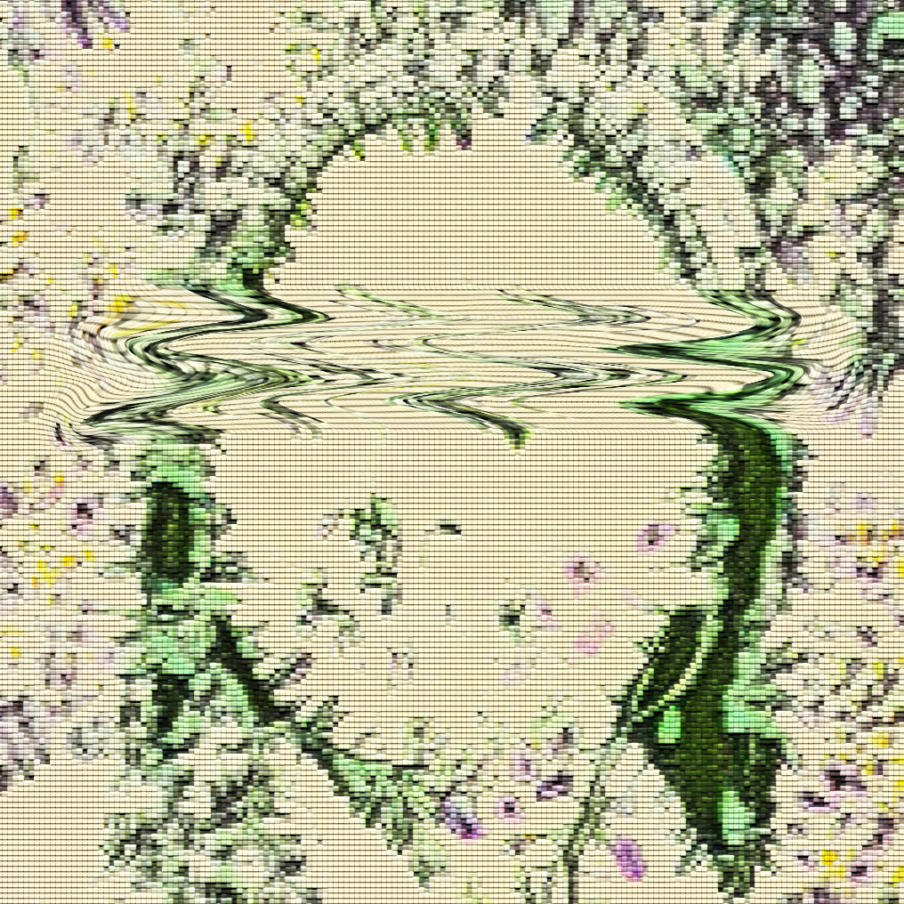

The idea behind my final project was to take some portraits and manipulate them through different softwares. I wanted to play with the timeline of technology by using photography and artificial intelligence to create the final pieces. The message I want to convey is that although people may seem put together on the outside, most, if not all, people have underlying personalities, struggles, and behaviors that they try to hide from others.



